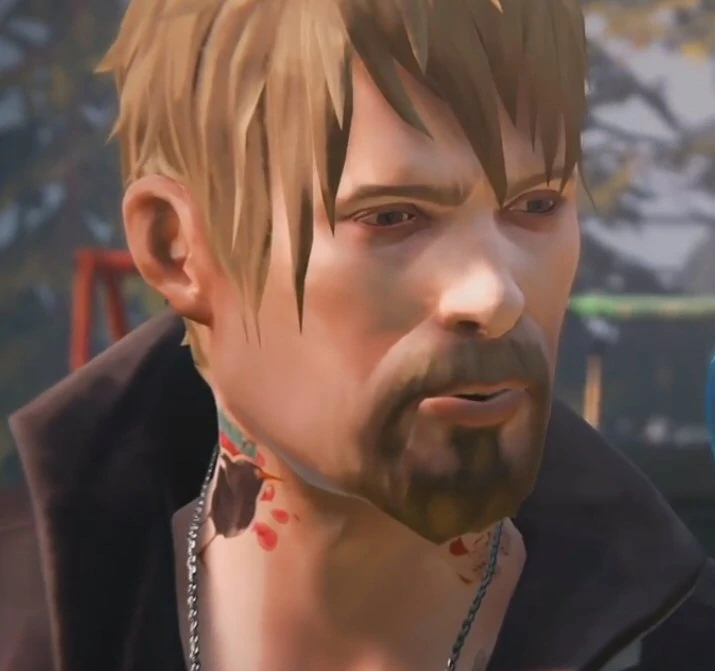

Chloe est une jeune femme née le 11 mars 1994 à Arcadia Bay. Elle est la fille de Joyce Madsen et William Price. Chloe a perdue son père à cause d'un accident de voiture le 28 septembre 2008, Chloé avait 14 ans, sa mort l'a beaucoup affecter. Elle a étudier à l'académie de Blackwell, elle y a été exclue en mai 2011 à 17 ans. Elle a 19 ans pendant le jeu en octobre 2013.
Elle est la meilleure amie de Max, qu'elle connaît depuis son enfance.
Quand on decouvre chloe, on la voit immature, rebelle, n'a pas sa langue dans sa poche, elle est dans le conflit permanent et pense que tout le monde l'a abandonner, ce sentiment d'abandon se justifie par la mort de son père, le départ de Max, sa mère qui a refait sa vie et rachel. Elle est perseverante et n'a peur de rien, ce qui lui est utile dans sa recherche de Rachel. En avançant dans l'histoire on découvre une Chloe sensible,gentille et drôle.

| Nom du personnage | Lien avec Chloe | Relation avec chloe |
|---|---|---|
| Max(ine) Caulfield |
Elle est sa meilleure amie avant qu'elle parte à Seattle, elle se connaissent depuis leurs enfances | Chloe est très attacher à Max, on voit que malgrès le départ de Max et son silence, Chloe lui pardonne rapidement à son retour. Chloe est interesser par Max, leur relation est ambigüe, entre amitié et amour. |
| Rachel, Dawn Amber |
Rachel est l'ange gardien de Chloe, elle a ete là pour Chloe quand elle était toute seule après la mort de son père et le départ de Max, elle lui "a sauvé la vie" | Elles sont en "couples libres", elles s'aiment. |
William Price |
Il est le père de Chloe | Chloe et lui sont très proche, il est un père trés sympa. ils s'aiment beaucoup. | Joyce Madsen |
Elle est la mère de Chloé | Leurs relations sont tendus, elles se disputent souvent mais elles s'aiment. |
| David Madsen |
Le beau-père | Il est un ancien soldat qui est très autoritaire avec Chloe, ils sont en conflits en permanance. Il l'aime mais ne sais pas communiquer avec elle. |
| Frank Bowers  |
Le dealer | Franck est le dealer de Chloe, il lui fournit sa beuh |

JE L'ADORE, Chloe est une jeune femme très attachante, elle est provocante mais on peut voir que c'est une carapace et qu'elle est une femme sensible,gentille, drôle.